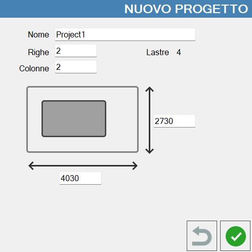
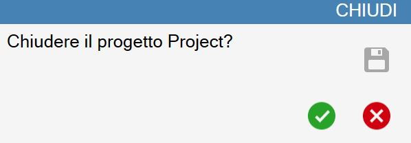
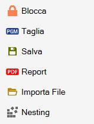
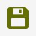
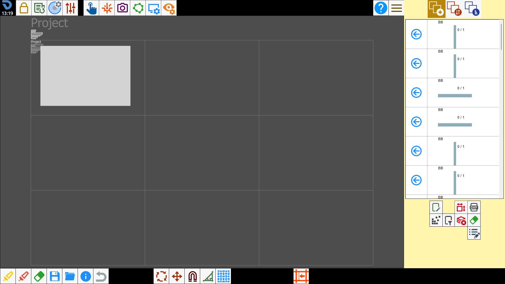
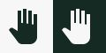
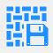
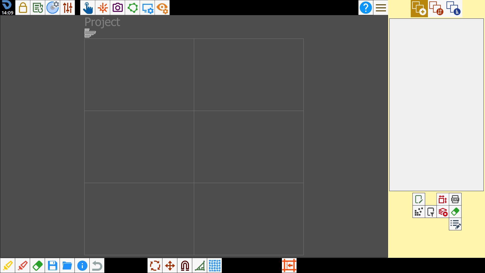
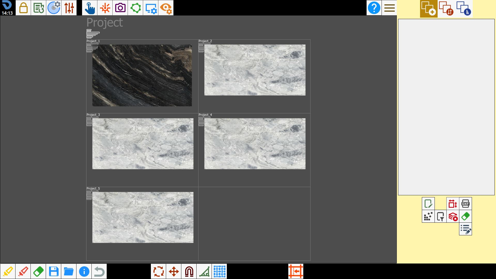

Project Match está diseñado para la planificación de proyectos a gran escala.
Permite gestionar varias losas simultáneamente para programar todos los mecanizados necesarios para el proyecto con una vista general.
/0.12.png)
/0.13.png)
Panel de control
Al pulsar el botón de la barra inferior se abre un panel desde el que puede navegarse por la función.
Si se desea acceder a Project Match, se mostrarán estos botones.
/image-20250623-112213.png)
Nuevo proyecto | |
/2.2-20250623-112446.png) | Cargar proyecto |
/2.3-20250623-112528.png) | Mostrar vista previa |
Dentro de un proyecto, en cambio, el panel dispone de botones diferentes.
/0.03.png)
/2.6-20250623-113918.png) | Guardar área de trabajo |
/2.7-20250623-114009.png) | Guardar todas las áreas de trabajo |
/2.8-20250623-114101.png) | Guardar y cerrar proyecto |
Nuevo proyecto
Al pulsar el botón se abre una ventana que permite crear un proyecto Book Match multilosa.

Nombre | Nombre con el que se guardará el proyecto. |
Filas | Permite definir el número de filas del proyecto. |
Columnas | Permite definir el número de columnas del proyecto. |
Losas | Número total de losas que puede contener el proyecto. |
/0.04.png) | Dimensiones del área de trabajo |
Cargar un proyecto
En esta pantalla se muestran los proyectos guardados que pueden abrirse.
/0.05.png)
Cerrar un proyecto
Se abre una ventana que permite cerrar el proyecto.
/0.06.png)

Para cambiar el modo de cierre utilice el botón:
/0.10.png) | Modo de cierre |
Proyecto
Un proyecto está estructurado en filas y columnas, que pueden contener las losas.
En esta pantalla es posible insertar losas dentro del proyecto, definir sus perímetros y posicionar las piezas.
El operador puede mover libremente las piezas de una losa a otra.
Zonas de trabajo
Las zonas de trabajo están representadas por las celdas del proyecto.
Cada zona permite gestionar el mecanizado de una losa, definiendo un perímetro e insertando piezas en su interior.
/0.11.png)
En la esquina superior izquierda de cada zona de trabajo se muestran algunos datos.
Losa | Dimensiones de la losa (anchura x altura x espesor). |
Piezas | Número de piezas posicionadas dentro del perímetro. |
Área de las losas | Área del perímetro de la losa. |
Área de las piezas | Área de las piezas posicionadas dentro del perímetro. |
Porcentaje | Porcentaje del área del perímetro ocupada por las piezas. |
Cortes | Longitud total de los cortes que deben realizarse en la losa. |
Minutos | Estimación del tiempo, en minutos, necesario para ejecutar el programa de corte en la losa. |
Parámetros del proyecto
Dentro del panel de parámetros de usuario se muestra la sección «Losas», desde la que pueden modificarse algunas propiedades del proyecto actualmente abierto.
/0.00.png)
Filas | El operador puede modificar el número de filas del proyecto actual. |
Columnas | El operador puede modificar el número de columnas del proyecto actual. |
Total | Número total de zonas que componen el proyecto actual. |
Losas | Número de losas insertadas en el proyecto actual. |
Piezas | Número de piezas insertadas dentro del proyecto actual. |
/0.01.png) | Teclas rápidas |
Atajos de teclado
Para Project Match hay disponibles comandos de teclado que permiten realizar fácilmente acciones rutinarias, útiles para simplificar el trabajo en la oficina.
/0.02.png)
Zoom del proyecto | Amplía la vista a todo el proyecto. |
Zoom de la zona | Restringe la vista a la zona de trabajo seleccionada. |
Modo pan | Permite desplazar la vista mediante la interacción con la pantalla. |
Navegar entre las zonas | Permite cambiar la zona seleccionada mediante las teclas. |
Mover pieza | Mueve la pieza seleccionada en las cuatro direcciones. |
Girar pieza | Gira la pieza seleccionada en sentido antihorario y horario, respectivamente. |
Girar pieza _90 | Gira la pieza 90 grados en sentido horario. |
Seleccionar todo | Si hay una zona de trabajo seleccionada, este comando selecciona todas las piezas de su interior. |
Activar selección múltiple | Activa la selección múltiple de piezas/zonas de trabajo. |
Deshacer | Deshace la última operación realizada. |
Copiar losa | Copia la losa dentro de la zona de trabajo seleccionada. |
Cortar losa | Corta la losa dentro de la zona de trabajo seleccionada. |
Pegar losa | Pega la losa dentro de la zona de trabajo seleccionada. |
Deseleccionar | Permite deseleccionar todas las piezas/zonas de trabajo. |
Confirmar perímetro o foto | Se utiliza para confirmar el perímetro/foto. |
Selección siguiente | Selecciona la siguiente pieza dentro de la zona de trabajo seleccionada. |
Imán on/off | Activa/desactiva el imán de las piezas. |
Comandos rápidos
Con el botón derecho del ratón puede accederse a la ventana de comandos rápidos.
Las funciones disponibles cambian según se pulse dentro de una zona de trabajo o fuera de todas ellas.
Comandos del proyecto
/0.22.png)
/0.31.png) | Guardar mecanizados |
/0.23.png) | Report |
/0.29.png) | Nesting |
Comandos de la zona de trabajo

/0.26.png) | Bloquear/Desbloquear |
/0.27.png) | Cortar |
 | Guardar |
| Report |
/0.30.png) | Importar archivo |
| Nesting |
Nesting
Al activar la función Nesting en todo el proyecto, hay disponibles dos modos.
/0.33.png)
Insertar las piezas en las losas actuales | Inserta las piezas en las losas ya presentes en el proyecto para optimizar el espacio disponible |
Insertar losas y piezas hasta agotarlas | Se crean losas en las que aplicar el Nesting hasta que se hayan agotado todas las piezas de la lista. |
Para utilizar el Nesting hasta agotar las piezas es necesario crear un perímetro que indique al programa las dimensiones de las losas que se utilizarán.
Se crearán losas del mismo tamaño hasta que todas las piezas de la lista se hayan insertado mediante el Nesting.

/0.34.png)
Report
Guarda un informe en formato PDF en la carpeta específica del proyecto/zona de trabajo actual.
Vista previa
En esta ventana puede verse una representación general del proyecto en tiempo real.
Es posible insertar las piezas dentro de la zona de trabajo seleccionada pulsando dentro de ellas en la vista previa.
Además, al arrastrar el fondo de una pieza, el operador puede cambiar la posición de la pieza sobre el banco.
Botones
A la izquierda se encuentran estos botones.
/2.02.png) | Mover piezas |
 | Mover vista |
A la derecha se encuentran estos botones.
/0.17.png) | Abrir render |
/0.16.png) | Personalizar vista previa |
/0.18.png) | Restablecer posición de las piezas |
/0.19.png) | Restablecer configuración del proyecto |
 | Guardar render |
Planificación de un proyecto
Crear un nuevo proyecto
El operador crea un nuevo proyecto indicando su nombre, el número de filas y columnas que lo componen, teniendo en cuenta que cada celda corresponde a una losa, y las dimensiones de las celdas. Una vez confirmado, se mostrará esta pantalla:

Añadir las losas
A continuación, inserte las losas en las zonas de trabajo. Para ello, seleccione una zona, cargue una foto desde un archivo y elija el perímetro.

Importar las piezas
A continuación, importe las piezas que desea cortar. Pueden cargarse tanto archivos DXF como piezas estándar. No hay límite en el número de archivos que pueden cargarse.
/0.37.png)
Abrir vista previa
Cuando haya piezas en la lista, puede abrirse la ventana con la vista previa del proyecto.
Esta mostrará todas las piezas que se han importado.
/0.38.png)
Insertar las piezas en las losas
Para insertar las piezas en las losas, utilice el método clásico mediante la lista de piezas o seleccione dentro de las áreas de las piezas que se ven en la vista previa.
A continuación se insertarán en la losa de la zona de trabajo seleccionada.
Al arrastrar una de las piezas desde la vista previa, la pieza también se desplazará sobre la losa para poder elegir la mejor zona de la losa y hacer coincidir las vetas entre las distintas piezas. También puede hacerse lo contrario, es decir, arrastrar la pieza desde la losa y comprobar en la vista previa si las vetas coinciden o no según la posición a la que se desplace.
/0.39.png)
/0.40.png)